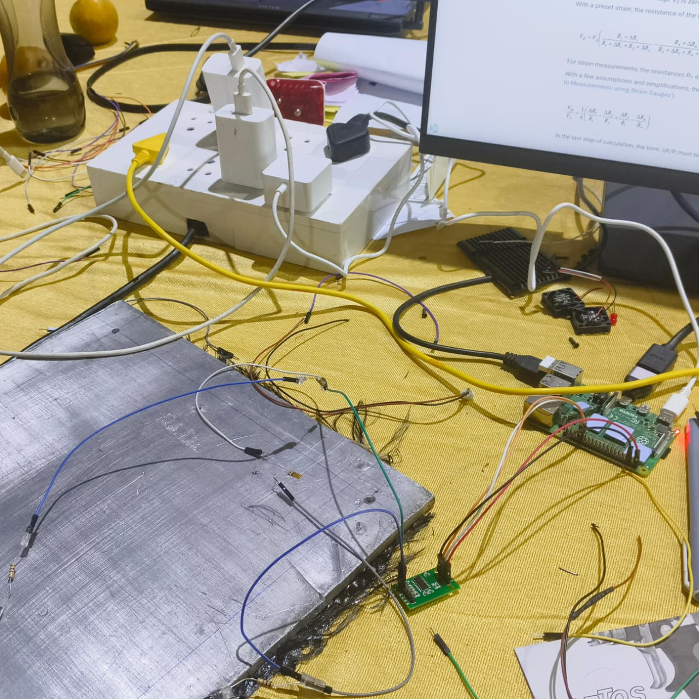

01 / 04
PATENTED HARDWARE CONCEPT2025
Smart Adaptive
Hybrid Joints
A hybrid aerospace joint designed to respond dynamically to variable loads, vibration, stress, temperature, and fatigue conditions.
View patent brief ↗